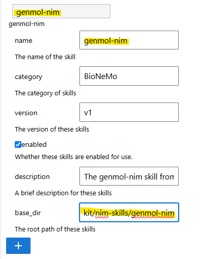
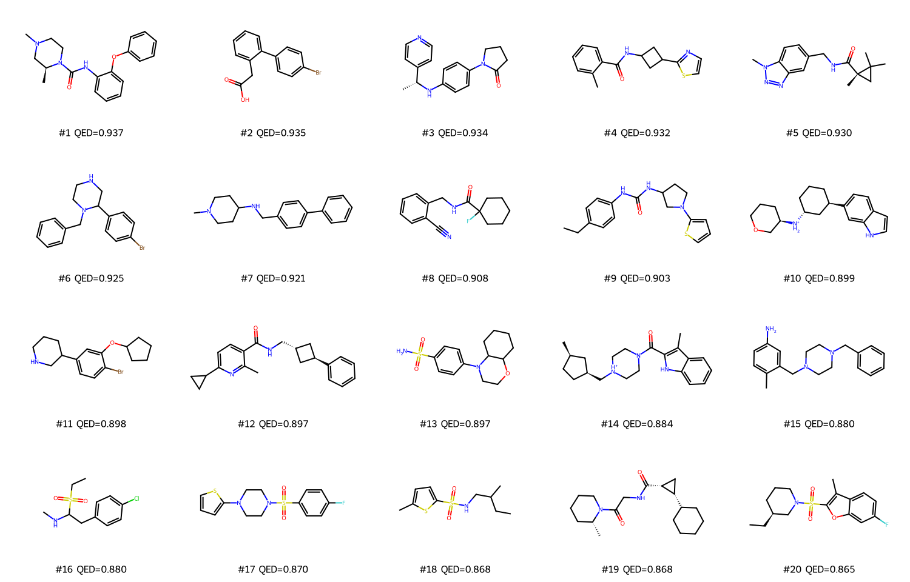

GenMol Skill Demonstration
In this section, we will demonstrate how to use the GenMol skill from the bionemo-agent-toolkit package. This skill enables the generation of novel drug-like molecules, alongside capabilities for scaffold decoration, motif extension, lead optimization, SAFE notation processing, and QED or LogP ranking. Please refer to the detailed documentation for further information.
Before getting started, we must configure the GenMol skill for JupyDeep. Please consult the “How-to Skill” guide for general setup instructions, and ensure you have a properly configured Conda environment ready, alongside a valid NVIDIA NGC_API_KEY. Below is our configuration for the GenMol skill. Make sure the skill name and the base_dir suffix are identical.

Subsequently, we modified the prompt derived from the package’s eval case: id-1 and integrated it into the JupyterLab-JupyDeep context, with a primary focus on optimizing data processing and visualization.
I want to generate 20 novel, drug-like molecules from scratch using GenMol. Do not use a scaffold—perform pure de novo generation and rank the results by drug-likeness. Use the hosted NVIDIA API (my NGC_API_KEY is already set in the environment). Generate a Jupyter notebook for this task, and visualize the generated molecular structures using RDKit.
Paste the prompt above into the chat input box. The content below demonstrates the subsequent output generated by JupyDeep via OpenAI GPT-5.2 and the GenMol skill. For the complete example, please refer to this case in the JupyDeep gallery.
GenMol de novo molecule generation (hosted NVIDIA API)
This notebook:
Generates 20 novel, drug-like molecules using GenMol in pure de novo mode (no scaffold).
Uses the hosted NVIDIA API (
NGC_API_KEYmust be set in the environment).Requests extra molecules to compensate for invalid/duplicate filtering.
Ranks results by QED (drug-likeness) and visualizes structures with RDKit.
Note: GenMol expects SAFE notation in the
smilesfield. For de novo generation we use a mask like[*{20-30}].
[1]:
# --- Environment & dependencies ---
import os
import sys
import importlib
def _ensure_pkg(import_name: str, pip_name: str | None = None):
"""Import a package; if missing, install it via pip then import."""
try:
return importlib.import_module(import_name)
except Exception:
pkg = pip_name or import_name
print(f"Installing missing dependency: {pkg}")
# Use pip inside notebook kernel
import subprocess
subprocess.check_call([sys.executable, "-m", "pip", "install", "-q", pkg])
return importlib.import_module(import_name)
requests = _ensure_pkg("requests")
pd = _ensure_pkg("pandas")
_ensure_pkg("tqdm")
# RDKit: prefer conda-forge, but in many notebook envs `rdkit-pypi` works.
try:
from rdkit import Chem
from rdkit.Chem import QED, Descriptors, Draw
except Exception:
_ensure_pkg("rdkit", pip_name="rdkit-pypi")
from rdkit import Chem
from rdkit.Chem import QED, Descriptors, Draw
# Optional: nicer rendering in notebooks
try:
from rdkit.Chem.Draw import IPythonConsole # noqa: F401
except Exception:
pass
# Confirm API key is present (do not print it)
assert os.environ.get("NGC_API_KEY"), "NGC_API_KEY is not set in the environment"
print("Ready.")
Ready.
1) De novo generation request (GenMol hosted API)
We use a SAFE mask as the input pattern:
[*{20-30}]asks GenMol to generate molecules with roughly 20–30 tokens worth of structure.
We request more than 20 molecules with unique=True because the service may filter invalid/duplicate candidates.
[3]:
from __future__ import annotations
from typing import Any
import pandas as pd
import requests
HOSTED_URL = "https://health.api.nvidia.com/v1/biology/nvidia/genmol/generate"
def genmol_denovo_qed(
num_molecules: int = 80,
safe_input: str = "[*{20-30}]",
temperature: str = "1.0",
noise: str = "1.0",
step_size: int = 1,
unique: bool = True,
timeout_s: int = 180,
) -> dict[str, Any]:
"""Call hosted GenMol for *de novo* generation with QED scoring."""
headers = {
"Content-Type": "application/json",
"Authorization": f"Bearer {os.environ['NGC_API_KEY']}",
}
payload = {
"smiles": safe_input, # SAFE notation (not plain SMILES)
"num_molecules": int(num_molecules),
"temperature": str(temperature), # must be string
"noise": str(noise), # must be string
"step_size": int(step_size),
"scoring": "QED",
"unique": bool(unique),
}
resp = requests.post(HOSTED_URL, headers=headers, json=payload, timeout=timeout_s)
resp.raise_for_status()
out = resp.json()
if out.get("status") != "success":
raise RuntimeError(out.get("error", f"GenMol failed: {out}"))
return out
# --- Make the API call ---
# If your environment cannot reach NVIDIA endpoints (e.g., DNS / outbound network blocked),
# this cell will warn and leave `df_raw` empty. Re-run in a network-enabled environment.
result: dict[str, Any] | None = None
try:
result = genmol_denovo_qed(num_molecules=120, safe_input="[*{20-30}]", unique=True)
mols = result.get("molecules", [])
print(f"GenMol returned {len(mols)} candidates")
except requests.exceptions.RequestException as e:
print("WARNING: Could not reach hosted GenMol API.\n"
"Reason:", repr(e), "\n\n"
"If you are running in a restricted environment, re-run this notebook where outbound HTTPS to\n"
"https://health.api.nvidia.com is allowed.")
mols = []
# Tabulate raw outputs
rows = [{"smiles": m.get("smiles"), "genmol_qed": m.get("score")} for m in mols]
df_raw = pd.DataFrame(rows).dropna().drop_duplicates(subset=["smiles"]).sort_values("genmol_qed", ascending=False)
df_raw.head(10)
GenMol returned 120 candidates
smiles genmol_qed
0 C[C@H]1CN(C)CCN1C(=O)Nc1ccccc1Oc1ccccc1 0.937
1 O=C(O)Cc1ccccc1-c1ccc(Br)cc1 0.935
2 C[C@@H](Nc1ccc(N2CCCC2=O)cc1)c1ccncc1 0.934
3 Cc1ccccc1C(=O)NC1CC(c2nccs2)C1 0.932
4 Cn1nnc2cc(CNC(=O)[C@@]3(C)CC3(C)C)ccc21 0.930
5 Brc1ccc(C2CNCCN2Cc2ccccc2)cc1 0.925
6 CN1CCC(NCc2ccc(-c3ccccc3)cc2)CC1 0.921
7 N#Cc1ccccc1CNC(=O)C1(F)CCCCC1 0.908
8 CCc1ccc(NC(=O)NC2CCN(c3cccs3)C2)cc1 0.903
9 c1cc2ccc([C@@H]3CCC[C@@H]([NH2+][C@@H]4CCCOC4)... 0.899
2) Clean up, enforce uniqueness, and select top-20 by QED
GenMol returns a score field for each molecule when scoring="QED".
Below we:
Canonicalize SMILES with RDKit
Drop invalid molecules
Enforce uniqueness by canonical SMILES
Select the top 20 by QED
[4]:
from rdkit import Chem
from rdkit.Chem import QED
def canonicalize_smiles(smiles: str) -> str | None:
m = Chem.MolFromSmiles(smiles)
if m is None:
return None
return Chem.MolToSmiles(m, canonical=True)
def compute_qed(smiles: str) -> float | None:
m = Chem.MolFromSmiles(smiles)
if m is None:
return None
return float(QED.qed(m))
if df_raw.empty:
raise RuntimeError("No molecules available. Re-run the API call cell after network access is enabled.")
# Canonicalize + validate
_df = df_raw.copy()
_df["canon_smiles"] = _df["smiles"].map(canonicalize_smiles)
_df = _df.dropna(subset=["canon_smiles"]).drop_duplicates(subset=["canon_smiles"]).copy()
# Recompute QED with RDKit for verification / consistent ranking
_df["rdkit_qed"] = _df["canon_smiles"].map(compute_qed)
_df = _df.dropna(subset=["rdkit_qed"]).sort_values(["rdkit_qed"], ascending=False)
# Select top-20
TOP_N = 20
df_top20 = _df.head(TOP_N).reset_index(drop=True)
print(f"Valid unique molecules available: {len(_df)}")
print(f"Selected top {len(df_top20)} molecules")
df_top20[["canon_smiles", "genmol_qed", "rdkit_qed"]].head(20)
Valid unique molecules available: 120
Selected top 20 molecules
canon_smiles genmol_qed rdkit_qed
0 C[C@H]1CN(C)CCN1C(=O)Nc1ccccc1Oc1ccccc1 0.937 0.936756
1 O=C(O)Cc1ccccc1-c1ccc(Br)cc1 0.935 0.934892
2 C[C@@H](Nc1ccc(N2CCCC2=O)cc1)c1ccncc1 0.934 0.934079
3 Cc1ccccc1C(=O)NC1CC(c2nccs2)C1 0.932 0.932407
4 Cn1nnc2cc(CNC(=O)[C@@]3(C)CC3(C)C)ccc21 0.930 0.929593
5 Brc1ccc(C2CNCCN2Cc2ccccc2)cc1 0.925 0.924558
6 CN1CCC(NCc2ccc(-c3ccccc3)cc2)CC1 0.921 0.921313
7 N#Cc1ccccc1CNC(=O)C1(F)CCCCC1 0.908 0.908134
8 CCc1ccc(NC(=O)NC2CCN(c3cccs3)C2)cc1 0.903 0.903117
9 c1cc2ccc([C@@H]3CCC[C@@H]([NH2+][C@@H]4CCCOC4)... 0.899 0.898758
10 Brc1ccc(C2CCCNC2)cc1OC1CCCC1 0.898 0.897941
11 Cc1nc(C2CC2)ccc1C(=O)NC[C@H]1C[C@H](c2ccccc2)C1 0.897 0.897250
12 NS(=O)(=O)c1ccc(N2CCOC3CCCCC32)cc1 0.897 0.896998
13 Cc1c(C(=O)N2CC[NH+](C[C@H]3CC[C@@H](C)C3)CC2)[... 0.884 0.883982
14 Cc1ccc(N)cc1CN1CCN(Cc2ccccc2)CC1 0.880 0.880404
15 CCS(=O)(=O)C(Cc1ccc(Cl)cc1)NC 0.880 0.880192
16 O=S(=O)(c1ccc(F)cc1)N1CCN(c2cccs2)CC1 0.870 0.869524
17 CCC(C)CNS(=O)(=O)c1ccc(C)s1 0.868 0.868048
18 C[C@@H]1CCCCN1C(=O)CNC(=O)[C@@H]1C[C@@H]1C1CCCCC1 0.868 0.867963
19 CC[C@H]1CCCN(S(=O)(=O)c2oc3cc(F)ccc3c2C)C1 0.865 0.864554
3) Save results + visualize top-20 with RDKit
We save a TSV/SMI and render a grid image of the top molecules.
[5]:
from pathlib import Path
from rdkit import Chem
from rdkit.Chem import Draw
OUTDIR = Path("outputs")
OUTDIR.mkdir(exist_ok=True, parents=True)
# Save as TSV
out_tsv = OUTDIR / "genmol_denovo_top20_qed.tsv"
df_top20.to_csv(out_tsv, sep="\t", index=False)
# Save as .smi (SMILES + score)
out_smi = OUTDIR / "genmol_denovo_top20_qed.smi"
with out_smi.open("w", encoding="utf-8") as f:
f.write("smiles\trdkit_qed\n")
for _, r in df_top20.iterrows():
f.write(f"{r['canon_smiles']}\t{r['rdkit_qed']:.4f}\n")
print("Wrote:")
print(" -", out_tsv)
print(" -", out_smi)
# Visualize
mols = [Chem.MolFromSmiles(s) for s in df_top20["canon_smiles"].tolist()]
legends = [f"#{i+1} QED={q:.3f}" for i, q in enumerate(df_top20["rdkit_qed"].tolist())]
img = Draw.MolsToGridImage(
mols,
molsPerRow=5,
subImgSize=(300, 240),
legends=legends,
useSVG=False,
)
img
Wrote:
- outputs/genmol_denovo_top20_qed.tsv
- outputs/genmol_denovo_top20_qed.smi
